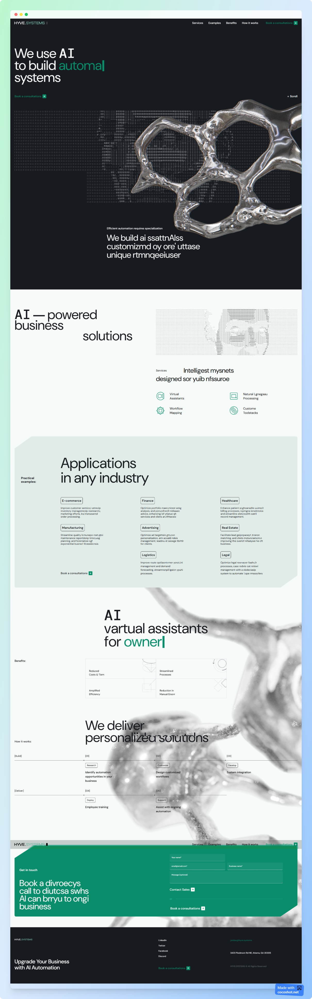

A modern, mobile-responsive website built with Next.js for fast performance and SEO. The site features smooth animations using Framer Motion, enhancing user interaction. Lottie animations are integrated for dynamic visuals, adding an engaging touch. React-Bootstrap ensures a consistent, clean UI across all devices. This project showcases skills in building responsive, animated websites with seamless user experiences. Visit...
